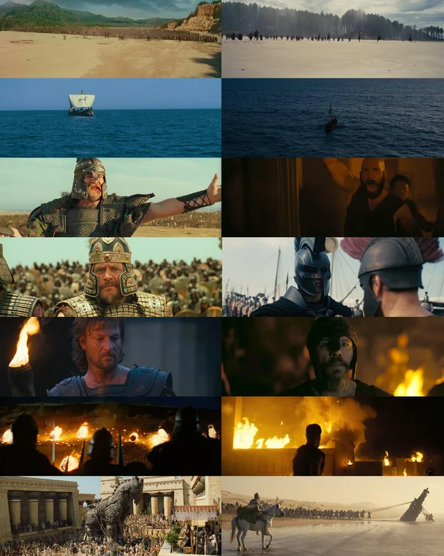

Troy created scale and realism without IMAX. Odyssey has all the modern tech — IMAX-certified cameras, VFX, and a massive budget. But does it actually look better, or just more polished?

Shot on 35mm film, practical sets, real stunts, 1,000 real extras. The result? It felt massive. Wolfgang Petersen used craft to create scale — camera angles, choreography, set design. Limited tools, maximum impact.
IMAX cameras, cutting-edge VFX, massive budget. Looks stunning, sure. But does it hit harder than Troy's beach landing? Debatable. More tech doesn't mean more impact.
The "Odyssey" devs throw GPT-4 at everything, chain 5 APIs together, use LangChain + vector DBs + fine-tuning before they even have users. Polished? Sure. Necessary? Rarely.
The "Troy" dev picks the right prompt technique for the job. A well-crafted system prompt with few-shot examples can outperform a bloated RAG pipeline. You don't need the IMAX camera if your directing is sharp.
You're writing instructions that make an AI model behave predictably and usefully. That's it. But doing it well is where the skill lives.
Input design — crafting the text you send to the model so the output is reliable, structured, and useful. This includes:
When you call Claude API to analyse CVs or generate portfolio content, the quality lives or dies in the prompt. The system prompt is the product. Everything else is plumbing.
Yes, but context matters:
Exists at bigger companies (Anthropic, Google, startups), but shrinking as models get better at following basic instructions.
This is where it's heading. Every dev building with LLMs needs this. It's becoming like knowing SQL — not a job title, it's a baseline expectation.
Listing "prompt engineering" as a skill is useful, but calling yourself a "prompt engineer" as a title is limiting in the UK market right now.
Charlie Babbit wasn't a genius. He didn't teach Rain Man anything. He just figured out where to point him and what to ask.
When Charlie discovered Rain Man could count cards, he didn't say "go be smart." He designed the whole setup — chose blackjack (not poker, not roulette), set the rules, told Rain Man exactly what to focus on, and handled everything else around him.
That's prompt engineering.
Knowing five techniques doesn't make you a prompt engineer. Knowing when to combine them does.
Charlie didn't just say "count cards." He layered the whole operation:
Role → He put Rain Man in a specific context — you're at a blackjack table, not wandering a casino floor.
Few-shot → He showed Rain Man the pattern — when you see these cards, this is what we do.
Chain-of-thought → He made Rain Man track the running count before giving the final signal — process first, answer second.
Structured output → He kept the response simple — just say hit or stay. No rambling, no extra information.
Anyone can ask an LLM a question. The skill is building the right combination of role, examples, reasoning, and format so the output is reliable every single time — not just once.
That's the difference between using AI and engineering with it.
Rain Man has the talent. But Rain Man without Charlie is just a guy counting toothpicks on the floor.